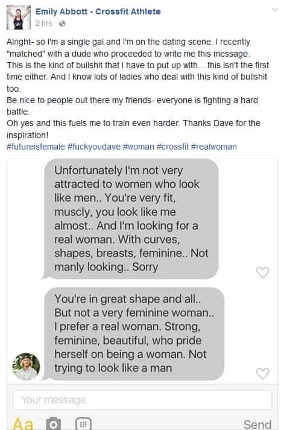
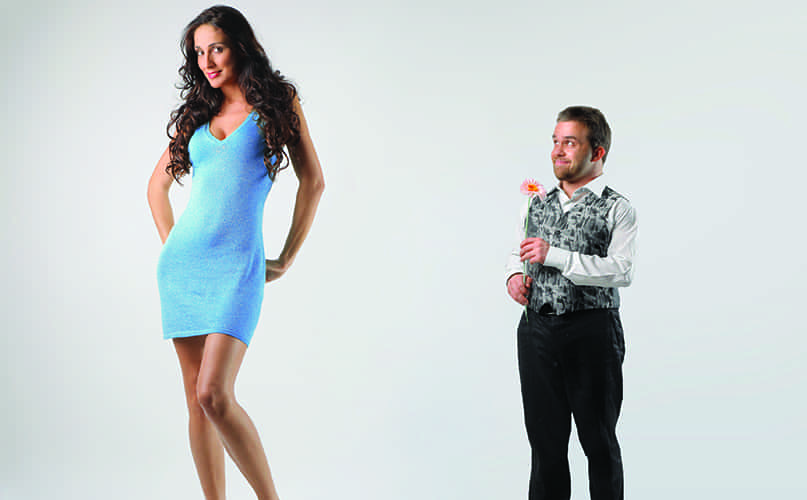
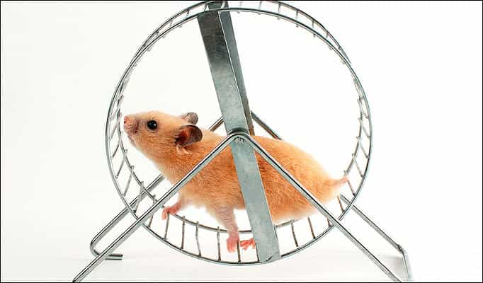
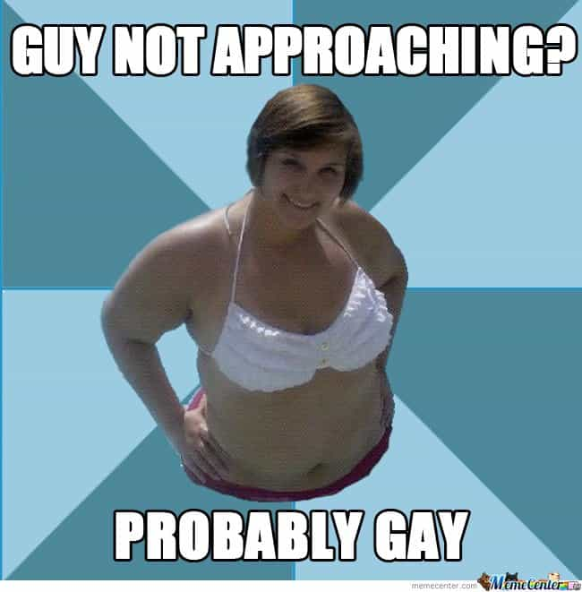

< < < Back
Woman Has Online Meltdown After Being Rejected By A Man For Being Too Muscular – Return Of Kings
I wasn’t offended that he wasn’t into me. I don’t expect everyone to be into how I look… I wasn’t trying to be a social-justice warrior [by posting on Instagram] or anything like that, but enough is enough, and I wanted him to be accountable for what he said.
— Emily Abbott, saying she doesn’t care but proving she really does care, to the point where she wanted thousands of people to rebuke a guy called Dave
Everyone has been romantically or sexually rejected at some point in their life. Yet a growing number of women seem to think that their rejection by a man warrants a wide dissemination on social media or in the media proper. The clear intention of this dissemination is to prop up their own flagging self-esteem and create widespread vitriol against the men rejecting them. One such case last month was CrossFit girl Emily Abbott, a 27-year-old Canadian told on a dating website that her muscular physique was not womanly enough.
Here’s Abbott’s initial attempt to garner sympathy from thousands of people online after what Dave said to her:

Note the use of the originally lesbian separatist and now Hillary Clinton slogan “#futureisfemale.” How should a man with actual testicles respond to that?
Having looked at what Dave said to her, I believe it was unnecessary. Whilst he would appear to at least partly share Return Of Kings‘ beliefs about true female beauty, some things are just a waste of time to say. The man’s biggest mistake was presuming she would ever take to heart what he wrote. That said, Emily Abbott posting the exchange on Instagram, complete with a fairly identifiable photo of Dave, speaks volumes about the current state of female entitlement.
We also have no proof about how the interaction started. Abbott claimed that he messaged her after they were matched together, suggesting a spontaneous rejection, but I’m more open to believing that she unleashed an account of how amazing men should find her. It’s likely that Dave found her distinctly uninteresting and annoying, not just unattractive, and Abbott became infuriated. This is really not that hard to believe, as she was upset enough to share the interaction with thousands of people.
When do men do this?

In the dating market, it’s (often) No Country for Short Men. But when women fall short of a man’s desires, the girl can always go to social media to vent.
When was the last time you can recall a man whining about being rejected and getting a thunderously positive set of responses for it? “This girl Laura rejected me for being ‘too skinny'” or “The girl at the bar said I was too short” are the kinds of gripes you will almost never hear on social media from men. And when these pleas do get attention, it is usually of the very pitying kind.
Men fall into three main categories when it comes to handling rejection. Many, if not the majority fume quietly (for a very long time) or talk bitterly about it with their friends, but still recognize that speaking out about it would be far worse. Other more proactive men, including those still moderately singed by the rejection, move forward. This second group accepts that either a) they themselves did something to cause their rejection and/or b) you cannot appeal to every woman out there. They then look at improving how they present to or interact with women, or reframe the rejection as an acceptable “loss.”
A third category, including the truly wallowing kind of male, deals with rejection even more destructively than the first category. By publicizing their rejection and the low self-esteem accompanying it, they rule themselves out to even greater numbers of women. They also set in motion the poor habits and mindset that will ensure further rejections for years to come.
The difficulty in explaining women like Emily Abbott is that they engage in an almost identical kind of self-pity as the third male category, but can normally expect to be validated by the crowd. “The problem is never you” is the message they receive from their admirers, making these girls immune to any further self-reflection.
So why are women like Emily Abbott single?

Hamsters gonna hamster.
I took an extended look at the Instagram comments made after Abbott’s first post about her rejection (where’s that ROK writer health insurance, Roosh?). The responses were overwhelmingly sycophantic and in praise of her. So, with all this positive attention and support, why was Abbott still single at the time? After all, her social media presence began long before her encounter with Dave, which only increased an already large following of pliant male supporters. Why doesn’t she just choose from amongst them?
Just as she has tried to cultivate a “strong,” “the future is female” lifestyle, she seems to refuse to date so many of the men who follow her. She will bang on about Dave not accepting her and wanting a traditional beauty, but won’t opt for the regular joes who salivate over her physique. It’s pretty clear that Abbott admonishes those men who want a slim hottie, the archetype of femininity, all while hunting for her own elusive alpha.
And although the muscular men she hangs around may play nice for the camera, they don’t seem to be asking her out on dates:
It’s not just CrossFit girls getting a platform when they’re rejected

Late last year, The Daily Mail decided to publish the photo of an Australian man living in Scotland. His crime? Calling a woman too overweight and old for him. Dating website Plenty of Fish promptly banned him. Again, though “Ash” calling this woman overweight was superfluous (just “next” or block her, guys), putting his photo on the internet turned a startlingly regular occurrence–rejection, whether romantic, social or professional–into a witch-hunt.
As Return Of Kings has long described, women expect men to find them attractive purely because they are women. Many men have unfortunately swallowed the feminist diktats and now find their groins stirring at anything with two X chromosomes (or even “women” without them).
Mass female hamstering, and its attendant validation by thirsty males, will undoubtedly continue. In the meantime, what men with standards must do is never compromise them. We will never apologize for desiring particular kinds of women for sex and excluding the rest.
Read More: What To Do When You’ve Been Rejected So Many Times That You’re Ready To Give Up